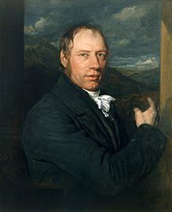

Richard Trevithick was born at Tregajorran (in the parish of Illogan), between Camborne and Redruth, in the heart of one of the rich mineral mining areas of Cornwall. He was the youngest-but-one child and the only boy in a family of six children. He was very tall for the era at 6 ft 2in, as well as athletic and concentrated more on sport than schoolwork. Sent to the village school at Camborne, he did not take much advantage of the education provided – one of his school masters described him as "a disobedient, slow, obstinate, spoiled boy, frequently absent and very inattentive". An exception was arithmetic, for which he had an aptitude, but arrived at the correct answers by unconventional means.
Trevithick was the son of mine "captain" Richard Trevithick (1735–1797) and of miner's daughter Ann Teague (died 1810). As a child he would watch steam engines pump water from the deep tin and copper mines in Cornwall. For a time he was a neighbour to William Murdoch, the steam carriage pioneer, and would have been influenced by his experiments with steam-powered road locomotion.
Trevithick first went to work at the age of 19 at the East Stray Park Mine. He was enthusiastic and quickly gained the status as a consultant, unusual for such a young person. He was popular with the miners because of the respect they had for his father.
In 1797, Trevithick married Jane Harvey of Hayle. They raised six children:
Jane's father, John Harvey, formerly a blacksmith from Carnhell Green, formed the local foundry, Harveys of Hayle. His company became famous worldwide for building huge stationary "beam" engines for pumping water, usually from mines, based on Newcomen's and Watt's engines.
Until this time, such steam engines were of the condensing or atmospheric type, originally invented by Thomas Newcomen in 1712, and which also became known as low-pressure engines. James Watt, on behalf of his partnership with Matthew Boulton, held a number of patents for improving the efficiency of Newcomen's engine, including the "separate condenser patent" – which proved the most contentious.
Trevithick became engineer at the Ding Dong Mine in 1797, and there (in conjunction with Edward Bull) he pioneered the use of high-pressure steam. He worked on building and modifying steam engines to avoid the royalties due to Watt on the separate condenser patent. At Ding Dong Boulton and Watt served an injunction on him and posted it "on the minestuffs" and "most likely on the door" of the Count (Account) House which, although now a ruin, is the only surviving building from Trevithick's time at Ding Dong.
He also experimented with the plunger-pole pump, a type of pump – with a beam engine – used widely in Cornwall's tin mines, in which he reversed the plunger to change it into a water-power engine.